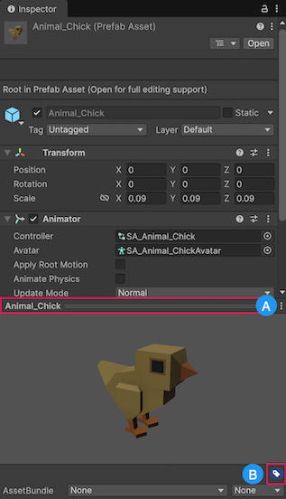
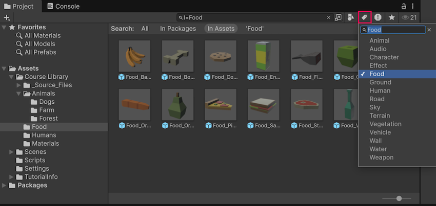

Labels are metadata that you can apply to assets to organize them into categories. Assets are easier to search and filter with a label applied to them. You can assign more than one label to each asset, and you can make custom labels or use Unity’s predefined labels.
Labels have the following advantages:
Labels are an Editor-only way of organizing assets. To organize GameObjects during runtime, use tags. For more information about how to use tags with GameObjects, refer to Assign tags to GameObjects.
To add a label to an asset:
Open the asset in the Inspector window.
If the Preview panel is minimized, drag the title bar (A) up to expand it.
In the Preview panel, select the label icon (B) to access the labels menu.

In the labels menu, select a label to apply it. The menu lists every label in the project. The check mark next to the label name indicates that the label is applied to the asset.
To create a new label for an asset:
You can then toggle the new label like any other entry in the menu.
To remove a label from an asset:
You can filter assets with labels in the Search window, the Project window or in the Inspector with the Advanced Object Selector window.
To filter assets in any of the windows, use the l: token in the search bar to find assets with the specified label. For more information about textual searches, refer to Search expressions.
For the Search window, you can also select labels with the Visual query builder.
In the Project window, select the label icon (Search by Label).
From the list, select a label name.

The Project window shows results grouped by location: All, In Packages, In Assets, and under the folder you currently have selected. For more information about how to search in the Project window, refer to Search assets with the Project search provider.
You can perform operations on multiple labels at a time with scripts:
AssetDatabase.GetLabels.AssetDatabase.SetLabels.AssetDatabase.ClearLabels.You can also filter your search by label with AssetDatabase.FindAssets or with AssetDatabase.FindAssetGUIDs.
For example, the following code retrieves all GameObject assets with the same label named Vegetation and displays the paths to the assets:
using UnityEditor;
using UnityEngine;
static class VegetationReport
{
[MenuItem("Tools/List Vegetation Prefabs")]
static void ListVegetationPrefabs()
{
// The l: token matches assets by label. Combine it with t: to
// narrow the results to a single asset type.
string[] guids =
AssetDatabase.FindAssets("l:Vegetation t:GameObject");
foreach (string guid in guids)
{
Debug.Log(AssetDatabase.GUIDToAssetPath(guid));
}
}
}